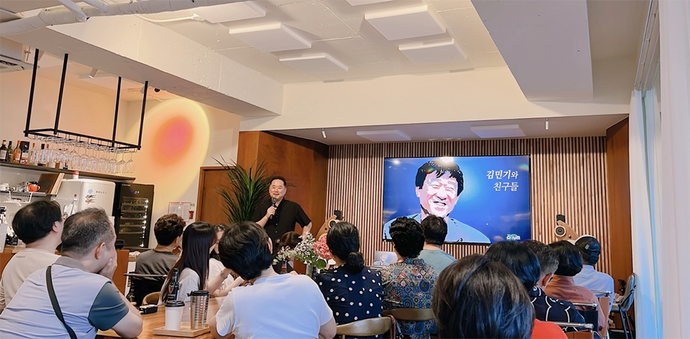
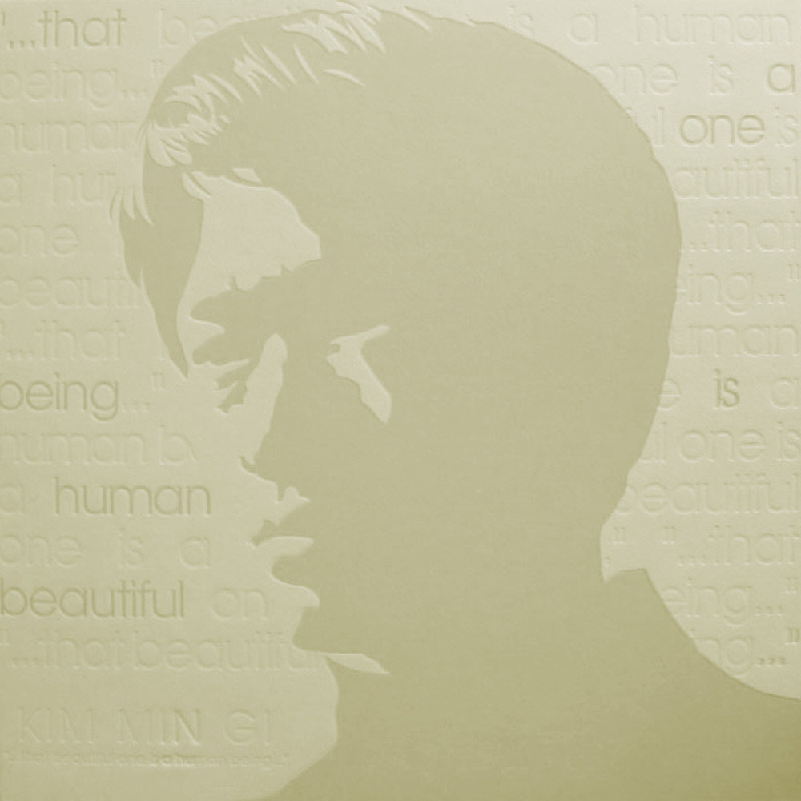

안녕하세요 라보엠입니다.
오티움 북살롱에서 진행하는 제5회 오티움 음악감상회 - 김민기와 친구들에 다녀왔습니다.
오티움 음악감상회 - 김민기와 친구들 : 북살롱 오티움
[북살롱 오티움] 서울 종로의 고품격 문화충전소, 북살롱 오티움입니다.
smartstore.naver.com
한국 역사 그 자체인 김민기의 초기 노래부터 최근 노래까지 들으며 한국 근대사를 온 몸으로 느끼고 왔습니다.
아침이슬, 친구, 작은 연못, 철망 앞에서 등 워낙 유명한 곡들이 많지만, 이번 감상회에서 제일 감동을 받았던 노래는 상록수입니다.
양희은이 부른 상록수가 박세리의 골프 대회 우승 영상으로 만든 공익광고에 사용되며, 많은 사람들에게 주목을 받았습니다.
노래 가사도 그렇고 승리의 이미지가 있지만, 사실 이 노래는 결혼식을 치르지 못한 노동자들을 위한 합동결혼식에 부른 노래라는 걸 이번 음악감상회를 통해 알게 되었고, 배경을 알고 노래를 다시 들으니 새롭게 다가왔습니다.

김민기 상록수 - Past Life Of Kim Min Gi
김민기 상록수 가사
저 들에 푸르른 솔잎을 보라
돌보는 사람도 하나 없는데
비바람 맞고 눈보라쳐도
온누리 끝까지 맘껏 푸르다
서럽고 쓰리던 지난날들도
다시는 다시는 오지 말라고
땀 흘리리라 깨우치리라
거치른 들판에 솔잎 되리라
우리들 가진 것 비록 적어도
손에 손 맞잡고 눈물 흘리니
우리 나갈 길 멀고 험해도
깨치고 나아가 끝내 이기리라
우리 가진 것 비록 적어도
손에 손 맞잡고 눈물 흘리니
우리 나갈길 멀고 험해도
깨치고 나아가 끝내 이기리라
깨치고 나아가 끝내 이기리라
김민기 (1951~2024)
김민기는 대한민국 음악인, 작사가, 작곡가, 편곡가, 뮤지컬 기획자, 연극 연출가, 뮤지컬 제작자로서 한 시대를 이끈 가수이자 탁월한 예술가입니다. 김민기의 음악은 포크 음악을 기반으로 하며, 간결하면서도 깊이 있는 멜로디와 가사가 특징입니다. 그는 자신의 음악을 통해 사회적 부조리와 인간의 고뇌를 표현하고자 했습니다. 김민기의 노래들은 당시의 정치적 상황과 맞물려 많은 이들에게 큰 감동을 주었습니다. 특히 아침이슬은 1970년대 민주화 운동의 상징적인 노래로 자리 잡았으며, 그의 예술적 업적은 한국 음악사에 큰 족적을 남겼습니다. 김민기는 음악 활동 외에도 연극 연출가로서도 큰 성과를 남겼으며, 그의 연극 작품들은 주로 사회적 부조리와 인간의 고통을 다루며, 깊은 철학적 메시지를 담고 있습니다. 김민기의 음악과 활동은 한국 대중문화 전반에 큰 영향을 미쳤으며, 그의 예술적 유산은 현재에도 살아 숨쉬고 있습니다.
